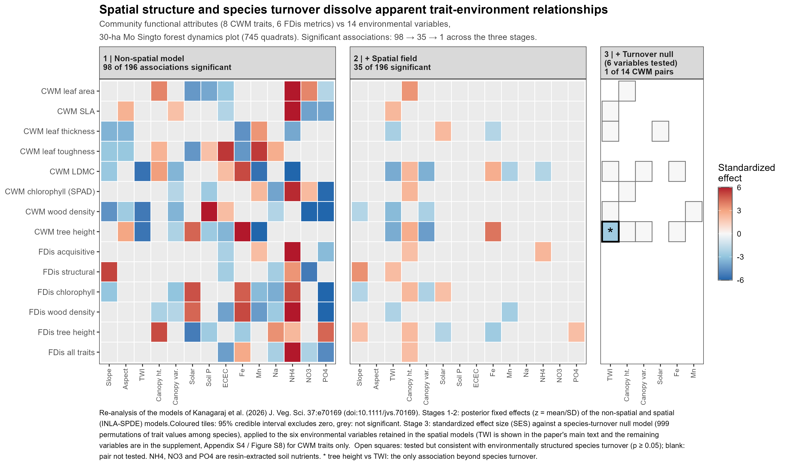
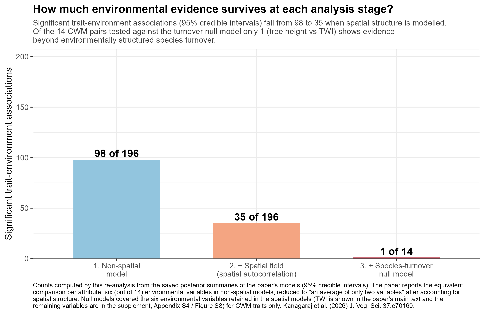

What environmental signals in a tropical forest's functional composition survive scrutiny?
A reanalysis of trait environment relationships showing how spatial structure and species turnover change the apparent environmental signal.
In a recent paper in the Journal of Vegetation Science (2026), my coauthors and I asked how environmental gradients (topography, soil nutrients and canopy structure) relate to the functional composition of plants on the 30 ha Mo Singto forest dynamics plot in Thailand.
Using around 135,000 woody plants and eight field measured functional traits, from which eight community-weighted mean (CWM) and six functional dispersion (FDis) attributes were derived, we used a spatially explicit Bayesian (INLA SPDE) framework to investigate trait-environment relationships.
We initially considered 24 environmental variables, but removed 10 highly correlated variables based on variance inflation factors, leaving 14 environmental variables for the subsequent analyses.
We found that topographic water availability, represented by the topographic wetness index (TWI), was the dominant environmental gradient associated with community functional patterns, aligning functional composition along the acquisitive to conservative resource use trade off.
Three stages of scrutiny
The figures below are an analytical synthesis I created for this page by reanalysing the paper's own models. Every trait environment association is tracked through three stages of scrutiny: a non spatial model, the same model with an explicit spatial random field, and finally a species turnover null model that asks whether the association can be explained by environmentally structured species turnover, rather than requiring an additional trait environment association beyond species compositional change.
Stage 1: The apparent environmental signal
When space is ignored, 98 of 196 possible trait environment associations appear significant. This provides a broad picture of environmental relationships in community functional composition, but does not distinguish environmental effects from spatially structured variation.
Stage 2: Accounting for spatial structure
Once an explicit spatial random field is included, the number of significant associations falls to 35. This shows that much of the apparent environmental signal is associated with spatial structure that is not captured by the non spatial models.
Stage 3: Accounting for species turnover
The remaining community-weighted mean relationships were then examined using a species turnover null model. This asks whether observed trait environment associations are consistent with environmentally structured species turnover. Most of the remaining relationships were consistent with this expectation, while tree height showed evidence of an additional trait environment association beyond species compositional change.
Evidence decomposition

Figure 1. Evidence decomposition of trait-environment associations. The first two panels show the 14 functional attributes, eight CWM and six FDis attributes derived from eight field measured traits, against the 14 environmental variables retained after multicollinearity screening. The third panel shows the species turnover null model. The starred tree height and TWI association is the only association that shows evidence beyond the species turnover expectation.
How much environmental evidence survives?

Figure 2. How much environmental evidence survives each analysis stage? Ninety eight of 196 possible associations are significant in the non spatial models, while 35 remain significant after explicit modelling of spatial structure. The subsequent species turnover null model shows that most of the remaining community weighted mean relationships are consistent with environmentally structured species turnover, with tree height showing evidence of an additional trait environment association beyond species compositional change.
What does this tell us?
Small scale functional composition in this old growth forest is therefore largely a story of species replacement along environmental gradients, rather than direct trait environment filtering.
The analysis highlights why environmental relationships in spatially structured ecological communities can be difficult to interpret. Apparent trait environment relationships can arise from spatial structure and from environmentally structured changes in species composition. Accounting for these processes changes the interpretation of the ecological signal.
Paper
Kanagaraj, R., Brockelman, W.Y., Wiegand, T., Nathalang, A., Yang, J., Tripathi, N.K. & Chanthorn, W. (2026). Spatial regulation of trait environment interactions shapes plant community functional patterns in a tropical forest. Journal of Vegetation Science 37: e70169. doi:10.1111/jvs.70169
Reanalysis note
The counts shown here were computed by reanalysis of the paper's saved posterior model summaries and null model tables. They are expressed as totals across all trait environment pairs. The complete evidence table behind both figures is available in the paper, and the data and code are archived on Figshare.
← Back to Research Highlights